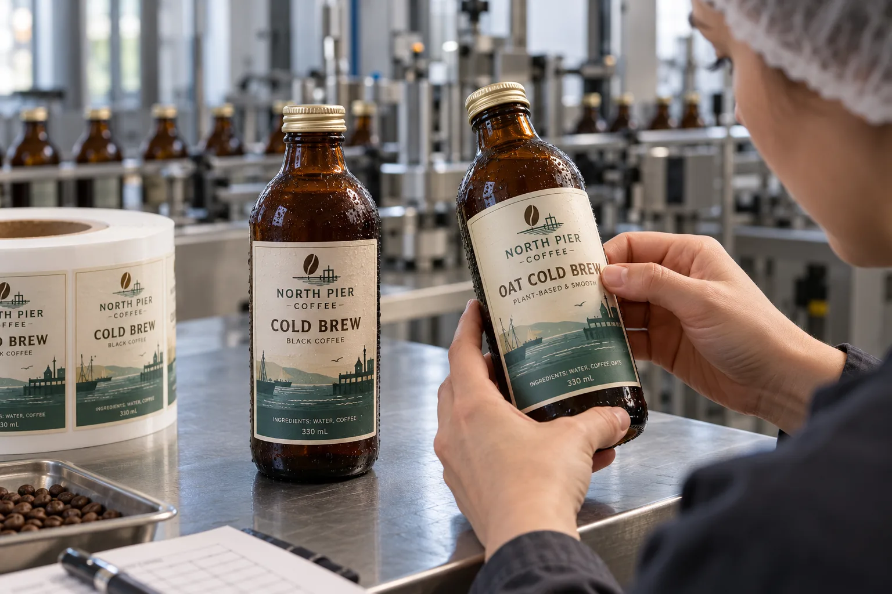

Fill the bottle before judging the label
A coffee buyer may approve a transparent label on an empty amber bottle and then find that the filled cold brew makes the product name hard to read. I would start with the actual coffee color and bottle tint. The white underprint, artwork contrast and body shape are part of the label specification, not last-minute fixes after the roll arrives.
UPM's beverage-label overview notes that cold and wet use can affect label performance. For the application step, Avery Dennison's cold/wet bottle bulletin explains why water on the surface reduces initial tack. It describes a specific adhesive system, so I would use it to ask better process questions, not to select a universal stock.
Two cold-brew launches, two sensible priorities
Imagine a composite cafe brand applying labels to clean bottles before cold filling. It can focus on the finished look after refrigeration: does the label stay flat, resist rubbing in a crate and keep the smaller text readable through condensation? A matte paper look may be attractive, but I would compare it with film using filled samples.
A composite co-packer labels sealed bottles after chilling. Its first problem may be the water on the glass at application. Before buying a more expensive adhesive, I would ask whether the bottle can be dried or the sequence adjusted. If not, specify the actual cold and moisture conditions and trial a construction intended for that job.
Keep flavor identity clear at speed
Black coffee and oat cold brew can look almost alike in amber bottles. Give the flavor name a strong text position, then make sure roll identity matches the filled product at changeover. If a transparent face is used, inspect it against both drinks under the store's likely light. A roll proof on white backing cannot answer this.
| Check | Failure to catch |
|---|---|
| Filled-bottle contrast | Small text vanishes into dark liquid |
| Application surface | Label slides on wet glass |
| Cold handling | Edge lift or print scuff in crates |
| Flavor changeover | Correct label on wrong fill |
Our buying view
Do not pay for clarity you cannot see
I would spend proof time on a filled, chilled bottle under normal shelf light. If the product name loses contrast, a sophisticated clear-film construction has not delivered its most basic job.
Send the cold-brew brief
- Filled amber bottles for each flavor.
- Cap, label panel and intended face dimensions.
- Whether labels are applied before or after chilling.
- Water and temperature conditions at the labeling station.
- Crate handling, display lighting and changeover sequence.
Read glass bottle condensation labeling for the broader process, and clear labels on dark bottles for print contrast.
Frequently asked questions
Will a clear label show on an amber cold brew bottle?
Not necessarily. Test dark coffee, bottle tint, white ink and small text together under real shelf lighting.
Can labels be applied after chilling?
Only when the chosen construction and process are qualified for the real surface temperature and moisture. Dry-bottle application may be simpler when the line allows it.
What should I send for proofing?
Send filled bottles, cap type, label dimensions, application sequence and cold-chain conditions, not an empty clear glass sample alone.
Related buyer guides
Review your label specification
Send package photos, label dimensions, material details, quantity and application conditions. Include good and failed samples where possible so the discussion starts with evidence.
Continue with HPP Juice Bottle Labels: Decide When to Apply Them for a focused purchase checklist.